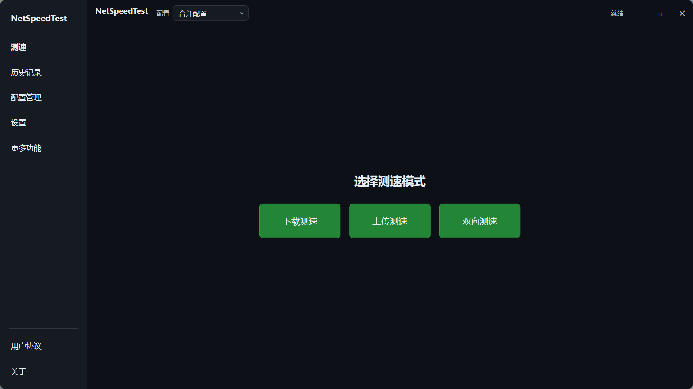

智能测速引擎
- 128 线程并发 HTTP GET / POST
- URL 动态调度，实时选择最优节点
- CPU 自适应线程上限，低配不反噬
- 掉速紧急补偿：自动加线程 + 结果修正
- 10s 稳定后取均值，3s 滑动窗口去毛刺
- 200ms 渐变启动，避免瞬间占满带宽
CDN 智能调度 · 自适应线程引擎 · 多网卡并行测速 · 掉速紧急补偿 · UDP 五层延迟探测 · 18 合 1 工具箱，一款工具全部搞定。
不只是跑个数字——从线程调度到结果计量，每一层都按专业标准实现。
IPv4Statistics 差分计算v1.4.0 主界面：选择测速模式，勾选要同时测速的网卡，一键开始。

从连通性测试到 NAT 类型检测，测速之外的网络诊断需求也全部内置。
一只手开始测速，另一只手继续喝咖啡。
默认值已经够快，细粒度交给喜欢折腾的人。
| 参数 | 范围 | 默认 |
|---|---|---|
| 并发线程数 | 1 – 512 | 128 |
| 整体超时 | 10 – 600 s | 60 s |
| 线程启动间隔 | 0 – 2000 ms | 500 ms |
| 平均计量延迟 | 1 – 30 s | 10 s |
| 速率平滑窗口 | 0.5 – 10 s | 3.0 s |
| 网卡轮询间隔 | 200 – 5000 ms | 1000 ms |
| 抖动探测主机 | — | 8.8.8.8 |
| 抖动采样间隔 | 1 – 60 s | 5 s |
基于 .NET 8 与 WPF 的 MVVM 架构，依赖项克制而清晰。
每个版本都经过实机测速验证，拒绝空壳功能。
完整变更记录请查看 CHANGELOG.md →
Windows 10 / 11 · .NET 8 单文件发布 · 约 170 MB · MIT 开源免费
git clone https://github.com/lingyingaojue/NetSpeedTest.git && cd NetSpeedTest && dotnet run --project NetSpeedTest/NetSpeedTest.csproj